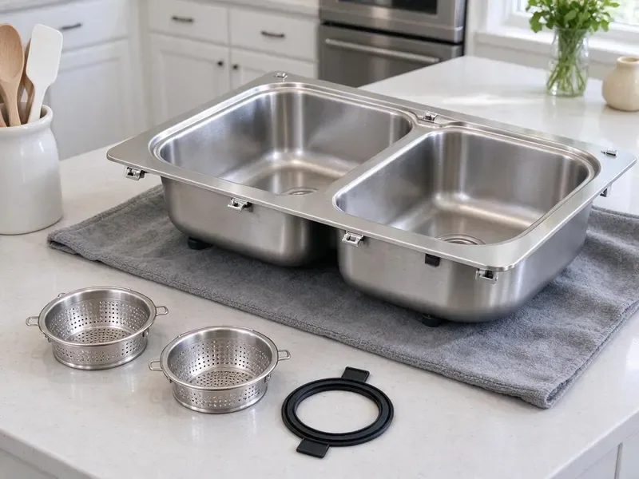

Grease Trap Installation in West Haven, CT
For reliable grease trap installation in West Haven, CT, look no further. GLV Plumbing provides professional plumbing services for commercial kitchens.
- Permit and Inspection Support
- Upfront Pricing
- Fast, Reliable Service
- Sized to PDI Standards
Expert Grease Trap Installation Services in West Haven, CT.
Ensure your commercial kitchen or restaurant meets local regulations with our professional service.
Expert Grease Trap Installation Services in West Haven, CT
GLV Plumbing installs hydromechanical grease traps and large gravity interceptors for restaurants, schools, food trucks with commissary kitchens and other food service sites. We calculate flow rates, select the right unit and connect every fixture that discharges fats, oils and grease.
Our expertise includes:
- All grease trap sizes and types
- Code-compliant installations
- Preventive solutions for FOG (fats, oils, greases)

Additional Kitchen Plumbing Services in West Haven, CT
Our kitchen plumbing services in West Haven, CT cover sinks, disposals, dishwashers, and grease traps so your kitchen keeps running without backups or leaks.


Customers
Why Choose GLV Plumbing for Grease Trap Installation in West Haven, CT?
An undersized or poorly vented grease trap fills fast, smells bad and leads to sewer backups and city fines. We size every install based on fixture counts, flow rates and your menu.
- Code Compliance, We make sure all installations adhere strictly to West Haven and Connecticut plumbing codes, preventing fines and operational disruptions.
- Prevent Clogs, A new grease trap effectively separates FOG from wastewater, protecting your drainage system from blockages.
- Accurate Sizing, We calculate gallons per minute for every connected sink and dishwasher before selecting a unit.
Citywide Coverage
From downtown eateries to suburban cafes, our plumbing crews are familiar with the infrastructure challenges across West Haven. We provide prompt and efficient grease trap installation services throughout the entire metropolitan area.
Experienced Team
The GLV Plumbing team consists of licensed and insured plumbers who regularly undergo training on the latest grease trap technologies and installation techniques. You can trust our expertise for a reliable and code-compliant installation every time.
Safety-First Approach
We follow local plumbing code and municipal fats, oils and grease programs on every installation. That includes proper venting, flow control and placement so lids are accessible for pumping and inspection.
Trusted Certified West Haven Plumbing Services Professionals
At GLV Plumbing, we take pride in providing licensed, certified plumbing services throughout West Haven, CT. Backed by recognized industry credentials, our experienced plumbers combine technical skill with genuine customer care. Whether it is repair, installation, or maintenance, we follow strict safety and quality standards to deliver long-lasting results you can trust.
Call Us Now PHCC Plumbing Contractor Recognition
PHCC Plumbing Contractor Recognition Better Business Bureau (BBB) Accreditation
Better Business Bureau (BBB) Accreditation Angi Certified Pro
Angi Certified Pro ISO 9001 Quality Management Certification
ISO 9001 Quality Management CertificationReliable Grease Trap Installation Services in West Haven, CT
Large Outdoor Grease Interceptor Installation in West Haven
For high-volume commercial kitchens in West Haven, large outdoor grease interceptors are often required by code. These substantial units are installed underground and designed to manage significant amounts of FOG before wastewater enters the municipal sewer system. We handle the whole process, including excavation, precise placement, connection, and final inspection, ensuring a robust and compliant installation.

Grease Trap Brands We Install in West Haven
GLV Plumbing installs a wide range of reputable grease trap brands known for their durability and effectiveness. We work with leading manufacturers like Zurn, Big Dipper, Schier, and Rockford Separators, among others. Our team in West Haven can help you choose the best brand and model that fits your specific needs, budget, and local code requirements for your commercial kitchen.
Commercial Grease Trap Installation in West Haven
For restaurants, cafeterias, and any food service business in West Haven, a well-functioning grease trap is a must. We specialize in installing commercial-grade grease traps designed to handle high volumes of FOG, making sure your kitchen operates smoothly and compliantly. Our installations are tailored to the specific needs and capacity requirements of your establishment, preventing costly backups and environmental issues.
Gravity Grease Interceptor Installation in West Haven, CT
Gravity grease interceptors, or GGI units, are larger, typically located outdoors, and rely on the natural difference in specific gravity between FOG and water. These are common for high-volume commercial kitchens. Our team handles the involved excavation, concrete work, and plumbing connections required for proper GGI installation, maintaining compliance with all local Connecticut ordinances for waste management.
In-Ground Gravity Interceptor Installation in West Haven, CT
Larger restaurants and high-volume kitchens often need an outdoor gravity interceptor. These concrete or polyethylene tanks usually range from several hundred to over 1,500 gallons. We excavate, set the tank on a stable base, connect inlet and outlet piping and install manhole risers. Rocky glacial soil and ledge are common in Connecticut, which can make digging for sewer, water, or septic lines costly work. We plan excavation equipment around the ground conditions we find on site. A properly installed interceptor can go much longer between pump-outs than an indoor trap.
Hydro-Mechanical Grease Trap Installation in West Haven, CT
Hydro-mechanical grease traps, also known as automatic grease removal units, offer an active solution for FOG management in West Haven, CT. These units often include internal baffles and flow control mechanisms to enhance separation efficiency. We provide expert installation of various hydro-mechanical models, ensuring all electrical and plumbing connections are correctly made for optimal performance and automated FOG removal.
Grease Trap Installation Cost in West Haven, CT
Small under-sink hydromechanical traps generally cost much less to install than large outdoor interceptors. Indoor units are usually a few thousand dollars installed, while in-ground interceptors can run well into five figures with excavation and concrete work. Pricing depends on unit size, location, soil conditions and whether we need to cut and patch floors. We give you a written estimate that includes permits and inspection. That way there are no surprises during construction.

Under-Sink Grease Trap Setup in West Haven, CT
Smaller establishments or specific kitchen stations in West Haven, CT may benefit from compact under-sink grease traps. These units are well suited for capturing FOG at the source, preventing it from entering the main plumbing lines. Our team carefully installs these smaller units, ensuring proper sizing, sealing, and connection to your existing plumbing system for effective waste management and odor control.
Grease Trap Installation Near Me in West Haven, CT
When you search for 'grease trap installation near me' in West Haven, CT, GLV Plumbing is your trusted local expert. Our team is strategically located to provide prompt and efficient service throughout the metropolitan area and surrounding communities. We understand the plumbing needs of businesses and homes in this area.
Don't let FOG cause a major headache for your commercial kitchen. For reliable grease trap installation near me, call GLV Plumbing today. We offer honest pricing, professional service, and a commitment to helping West Haven businesses maintain compliant and functional plumbing systems.
GLV Plumbing at a Glance
- Licensed and insured plumbers serving West Haven, CT
- Same-day appointments and 24/7 emergency response
- Upfront, flat-rate pricing before work begins
- 4.8-star rated by 946+ Connecticut customers
West Haven Map
West Haven Information
- Population
- 54,790
- Area codes
- 203/475/860
- Service area
- West Haven and communities within 40 miles
- Nearby
- New Haven, Milford, Bridgeport, Waterbury
Municipal pretreatment rules and high restaurant volume make careful sizing and sound installation of grease interceptors essential for food businesses in West Haven, CT. Rocky glacial soil and ledge are common in Connecticut, which can make digging for sewer, water, or septic lines costly work.
Expert Services
Trust our professionals for reliable GLV Plumbing solutions in West Haven, CT.
Our Specialized Plumbing Services in West Haven, CT
At GLV Plumbing, we provide a complete range of plumbing services across West Haven, CT. From leak detection to full system installations, our team ensures fast, precise, and affordable service for both residential and commercial properties. Explore our core services below:


How Our Grease Trap Installation Process Works in West Haven, CT
Here is how we take your grease trap project from sizing to sign-off.
Request a Quote
Call (860) 487-7330 and tell us about your kitchen, fixtures and timeline. We schedule a site visit to measure, review plans and confirm local requirements.
Size and Permit
We calculate flow rates, choose the right trap or interceptor and prepare any permit documents. Then we set an install date that works around your service hours.
Install and Inspect
Our crew sets the unit, connects inlet and outlet piping, adds venting and flow control and tests the system. We meet the inspector and walk your staff through cleaning access.
Frequently Asked Questions About Grease Trap Installation in West Haven
Small indoor hydromechanical traps typically cost $1,500 to $5,000 installed. Large outdoor gravity interceptors often run $8,000 to $30,000 or more with excavation, concrete and site restoration. We provide a written estimate after a site visit.
Signs you might need a new grease trap include frequent sewer backups, persistent foul odors coming from drains, slow drainage throughout your kitchen, or if your current unit is visibly corroded or leaking. If your existing trap is old and no longer meets current local codes in West Haven, an upgrade is also a good idea.
We install a variety of reputable grease trap brands, including Zurn, Big Dipper, Schier, and Rockford Separators. Our plumbers are familiar with the specifications and installation requirements of numerous manufacturers, ensuring you get a high-quality, durable system tailored to your needs.
Determining the correct grease trap size involves calculating your kitchen's wastewater flow rate, fixture count, and peak operating hours. Our experienced plumbers will conduct a complete assessment of your West Haven business to recommend the appropriate size and type of grease trap that meets local codes and your operational needs.
We install all common types of grease traps, including gravity grease interceptors, hydro-mechanical grease traps (automatic grease removal units), and compact under-sink grease traps. Our team helps you determine the best system for your commercial kitchen's specific needs and local code requirements.
Signs you might need a new grease trap include frequent drain clogs, slow drainage in multiple fixtures, persistent foul odors coming from drains, or if your current unit is old, corroded, or no longer meeting local code requirements. An inspection by a professional plumber can confirm the need for replacement.
Installation time depends on the size and complexity of the grease trap. A small under-sink unit might take a few hours, while a large outdoor interceptor could require several days due to excavation and concrete work. We strive to complete installations efficiently to minimize disruption to your business operations.
We calculate flow from every connected fixture, including sinks, floor sinks and dish machines. Hydromechanical units are typically rated by gallons per minute, while gravity interceptors are sized by volume and retention time.
What People Are Saying About Our Plumbing Experts?

Emily R.
I called GLV Plumbing for plumbing repair, and the technician was fast, polite, and thorough. They explained the problem clearly and fixed it the same day. I will definitely hire them again. Highly recommended!
Plumbing Repair · New Haven, CT
Laura S.
I scheduled a water heater replacement, and the team made the process smooth and affordable. The new unit works perfectly, and they cleaned up after completing the job.
Water Heater Replacement · Meriden, CT
Daniel K.
A pipe burst at 11 pm and they actually answered. The plumber showed up within the hour, shut everything down, and had us back to normal the next morning. Could not ask for more.
Emergency Plumbing · Milford, CT
Mark T.
When our office needed drain cleaning, GLV Plumbing provided quick, reliable service. The plumber arrived on time and made sure every drain flowed perfectly before leaving. Very satisfied.
Drain Cleaning · West Haven, CT
Robert G.
The trenchless sewer replacement saved our front yard. They walked us through the camera inspection footage first so we knew exactly what we were paying for.
Sewer Line Replacement · Waterbury, CTSofia M.
Two new toilets installed in one visit, no mess left behind, and the tech even adjusted a faucet he noticed was dripping. Fair pricing and really friendly.
Toilet Installation · Waterbury, CT